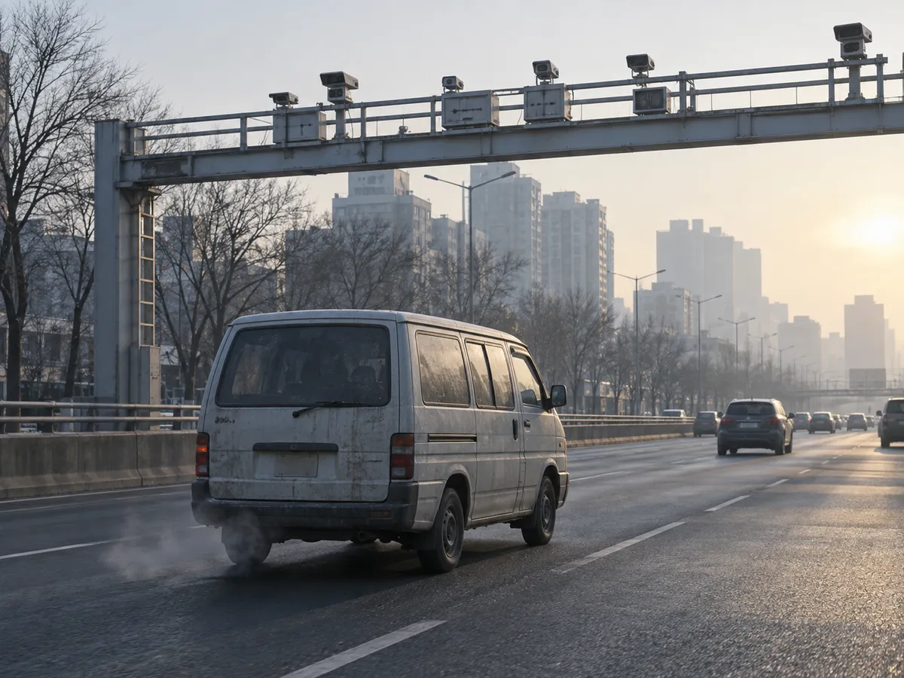
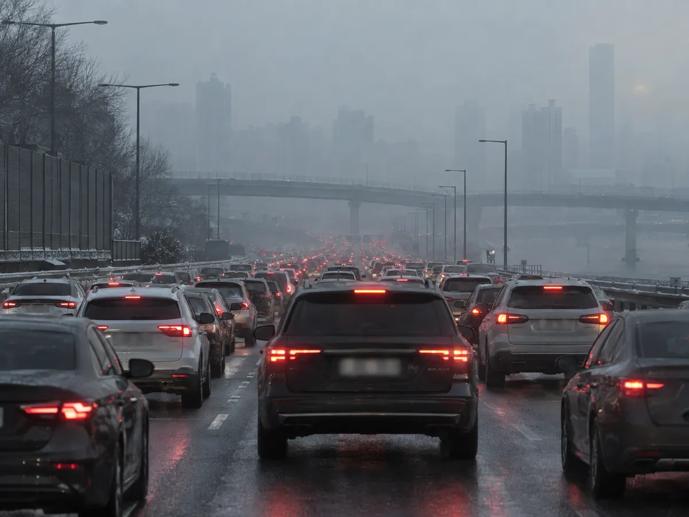
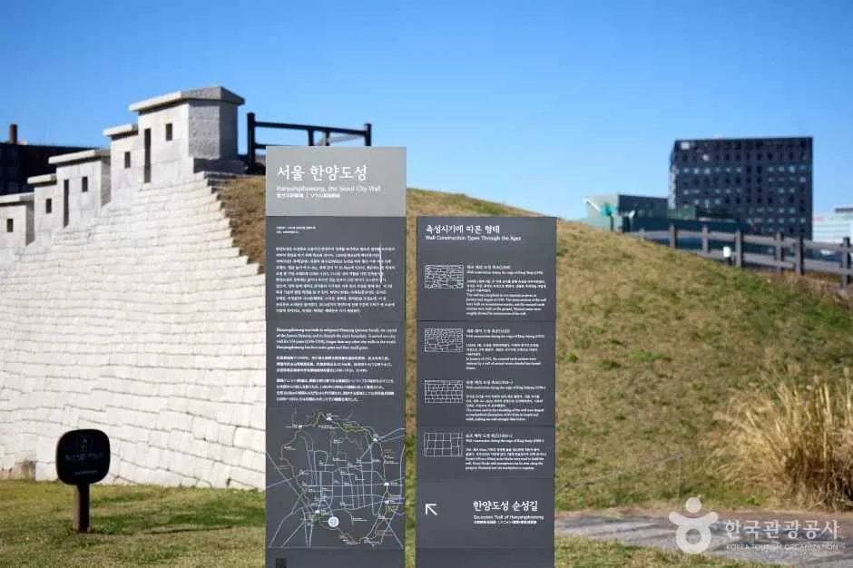
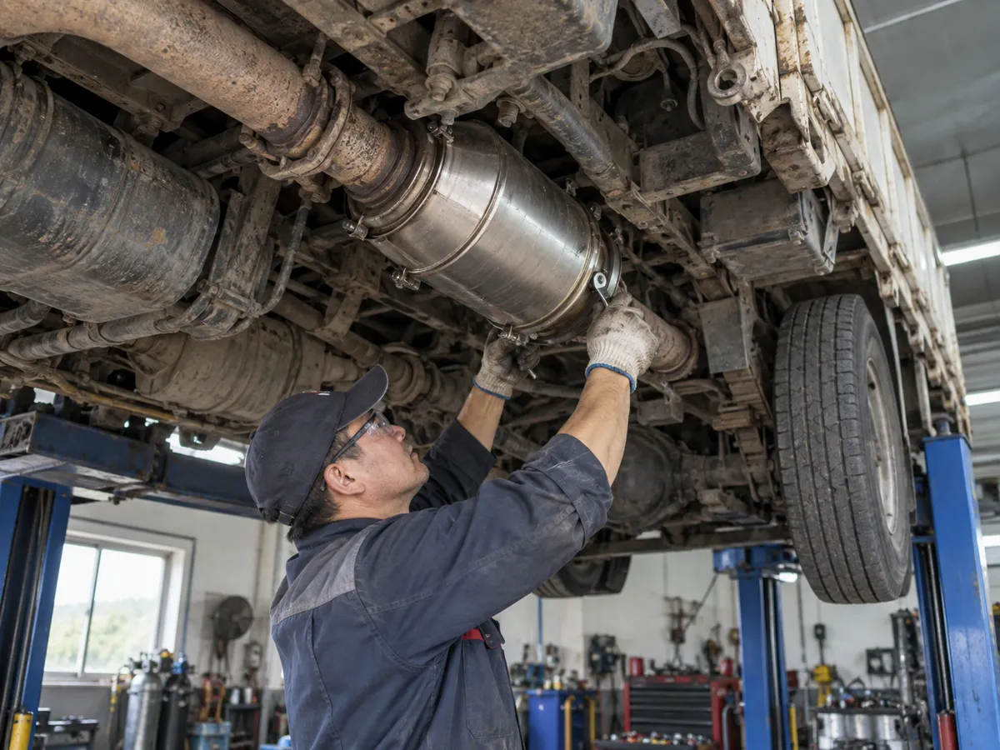

▲ 계절관리제 기간에는 지자체 무인단속체계가 저공해 미조치 5등급 차량을 가려낸다 ⓒ CarPrism (AI 생성 이미지)
"12월 1일부터 내 차가 단속 대상일까?" 해마다 겨울이 오면 반복되는 질문이다. 미세먼지 계절관리제 기간(12월~다음 해 3월)에는 수도권과 6개 특·광역시에서 저공해조치를 하지 않은 배출가스 5등급 차량의 운행이 평일 낮 시간대에 제한되고, 적발되면 하루 1회 10만 원의 과태료가 부과된다. 이 글은 대상 지역·시간·예외·등급 조회·지원금까지 한 번에 정리한다.
먼저 짚을 것이 있다. 2026-27 시즌(제8차) 계절관리제의 공식 시행계획은 9월 29일 기준으로 확인되지 않았다. 지난 시즌(제7차, 2025.12~2026.3) 계획은 2025년 11월 25일 국무총리 주재 미세먼지대책 특별위원회에서 발표됐다. 그래서 이 글의 수치는 기본적으로 지난 시즌(2025-26) 기준이며, 올해 달라지는 부분은 공식 발표를 다시 확인해야 한다.
1. 올해는 뭐가 확정이고, 뭐가 아직인가
계절관리제 운행제한은 미세먼지 특별법과 지자체 조례에 근거해 매년 12월 1일부터 3월 31일까지 이어지는 제도다. 그런데 새 시즌 계획은 보통 11월에 나온다. 지난 시즌에도 정책브리핑의 '제7차 미세먼지 계절관리제'가 게시된 날짜는 2025년 11월 25일이었다. 그러니 지금 시점에서 확인 가능한 것과 아닌 것을 구분해 두는 편이 안전하다. 9월 29일 재조사에서도 기후에너지환경부·서울시 공식 페이지에서 제8차 시행계획 공고는 찾지 못했고, 서울시 대기환경정보 페이지는 계절관리제를 '12월부터 3월까지, 평일 06~21시'로 일반 안내하고 있었다.
| 항목 | 확인 상태 | 근거 |
|---|---|---|
| 제8차 시행계획(기간·지역·시간) | 미확인 (공식 공고 확인 못함) | 지난 시즌은 11월 발표 |
| 5등급 운행제한 제도 자체 | 유지 중 (제7차 시즌까지 시행) | 정책브리핑·MECAR 안내 |
| 과태료 1일 1회 10만 원 | 지난 시즌 기준 확인 | 정책브리핑(2025.11.12) |
| 5등급 조기폐차·저감장치 지원 | 2026년까지만 한시 운영으로 발표 | 기후에너지환경부 발표(2026.2.10), 정책브리핑(2026.2.13) |
📍 이 글의 기준
본문에서 '지난 시즌'은 제7차(2025.12.1~2026.3.31)를 뜻한다. 올해 시행 기간·시간·지역이 바뀌면 이 글의 수치와 달라질 수 있으므로, 12월 초 각 시·도 공지를 한 번 더 확인하자. 공식 안내는 MECAR 운행제한 안내 바로가기에서 확인 가능하다.
▲ 계절관리제 기간에는 지자체 무인단속카메라가 저공해 미조치 5등급 차량을 가려낸다(개념 이미지) ⓒ CarPrism (AI 생성 이미지)
2. 누가 대상인가 — '5등급'이 아니라 '저공해 미조치 5등급'
지난 시즌 정책브리핑은 단속 대상을 "저공해 미조치 5등급 차량"으로 정리했다. 5등급이라고 모두 단속되는 것은 아니고, 저감장치 부착이나 조기폐차 같은 저공해조치를 이미 받은 차량은 대상에서 빠진다. MECAR 등급산정기준 안내에 따르면 등급은 차량 연식이 아니라 인증 당시 적용된 배출허용기준으로 정해지고, 같은 차종이면 모든 차량에 같은 등급이 적용된다. 경유차의 경우 2002년 7월 1일을 기준으로 5등급 배출허용기준이 나뉘는 것으로 소개되지만, 2006~2007년에는 4등급·5등급 기준 차량이 함께 생산돼 제작연도만 보고 판단하기 어렵다. 정확한 확인은 등급 조회가 가장 빠르다.
대상 규모는 줄고 있다. 기후에너지환경부는 2026년 2월 발표에서 5등급 차량 등록 대수(자동차보험 기준)가 2020년 말 약 100만 대에서 2025년 말 약 16만 대로 84% 줄었다고 밝혔다. 그만큼 지금 5등급으로 남은 차는 오래 굴린 경유차·화물차·영업용 차량 비중이 높다.
✅ 이런 차라면 먼저 확인하자
· 2000년대 초반 이전 등록한 경유 승합·화물차
· 오래된 휘발유·LPG 차를 물려받았거나 중고로 산 경우
· 부모님·지인 명의 차를 대신 운행하는 경우(등급은 차량 기준, 운전자 기준이 아님)
· 저감장치를 달았다고 들었지만 서류로 확인하지 못한 차
3. 어디서, 언제, 얼마 — 지역·시간·과태료
| 구분 | 내용 |
|---|---|
| 시행 기간 | 2025년 12월 1일 ~ 2026년 3월 31일 (제7차) |
| 시행 시간 | 평일 06~21시 (울산은 18시까지), 공휴일·토요일 제외 |
| 시행 지역 | 수도권(서울·경기·인천) + 세종·대전·광주·대구·울산·부산 (총 9개 시·도) |
| 단속 대상 | 전국 등록 5등급 차량 중 저공해 미조치 차량 (시행 지역 도로 운행 시) |
| 과태료 | 1일 1회 10만 원 |
| 등급 조회 | 자동차배출가스 종합전산시스템(mecar.or.kr), 전화 1833-7435 |
핵심은 '등록지'가 아니라 '운행 장소'가 기준이라는 점이다. MECAR 안내는 대상을 "전국 5등급 차량 중 저공해 미조치 차량"으로 적고 있다. 지방 번호판 차량이라도 서울·경기·인천 등 시행 지역 도로에서는 단속 대상이 된다. 하루에 여러 번 적발돼도 과태료는 1일 1회 10만 원이라는 점이 지난 시즌 안내에 명시돼 있다. 2019년 환경부 초기 보도자료에서는 '10만 원 이하'에 "하루 2회 이상 위반 시 처음 적발 지자체에서만 1회 부과"로 안내했다.
4. 어떻게 잡아내나 — 무인단속카메라와 등급 대조
단속은 지자체가 운영하는 무인단속체계로 이뤄진다. 2019년 환경부 보도자료는 제도 초기에 수도권 121개 지점, 수도권 외 407개 지점에서 무인단속체계를 운영한다고 밝혔다. 다만 최신 지점 수는 이번 재조사에서 공식 수치를 찾지 못했다. 카메라가 차량 번호를 판독하고 등급·저공해조치 이력과 맞춰 위반 여부를 가리는 방식으로 알려져 있으나, 구체적 운영 절차는 지자체마다 다르니 공식 확인이 필요하다.
📍 서울은 카메라 위치도 공개한다
서울시는 녹색교통지역 단속 카메라 위치를 TOPIS 무인단속 메뉴에서 안내한다. 서울시 계절관리제 페이지도 평일 06~21시 단속과 과태료 10만 원, 카메라·측정기를 활용한 운행차 배출가스 단속을 소개한다. 서울시 대기환경정보 바로가기

▲ 계절관리제는 미세먼지 농도가 높아지는 겨울철 12월~3월에 집중 시행된다(개념 이미지) ⓒ CarPrism (AI 생성 이미지)
5. 헷갈리기 쉬운 다른 제도 — 녹색교통지역·비상저감조치
같은 5등급 차량을 대상으로 하지만 계절관리제와 별개로 운영되는 제도가 있다. 특히 서울 한양도성 안쪽 '녹색교통지역'은 계절관리제 기간이 아니어도, 주말·공휴일에도 적용된다는 점이 다르다.
| 제도 | 대상 지역 | 시간·기간 | 과태료·특징 |
|---|---|---|---|
| 계절관리제 | 수도권 + 6개 특·광역시 | 12~3월, 평일 06~21시 | 저공해 미조치 5등급, 1일 1회 10만 원 |
| 서울 녹색교통지역 | 한양도성 내부(종로·중구, 약 16.7㎢) | 상시 06~21시, 토·일·공휴일 포함 | 5등급 모든 차량 대상, 1회 적발 10만 원·3회 이상 20만 원(서울시 안내) |
| 비상저감조치 | 고농도 예보 시 지자체별 | 평일 06~21시 | 초회 적발 10만 원(MECAR 안내) |
서울시 안내에 따르면 녹색교통지역은 2019년 12월부터 시행 중이며 44개 진입 지점에서 번호판 자동인식(ANPR) 방식으로 단속한다. 저공해조치 차량·긴급차·장애인·국가유공자 차량 등은 제외로 안내된다. 낮 시간대 서울 도심을 자주 다닌다면 저공해조치를 마쳐 두어야 하는 이유다.

▲ 서울 녹색교통지역의 경계는 한양도성 내부다. 사진은 한양도성 순성길의 성벽과 안내판이다 ⓒ 사진=한국관광공사
6. 단속에서 빠지는 차량 — 전국 공통과 지역별
제외 대상은 전국 공통 기준과 지역별 추가 기준으로 나뉜다. 지난 시즌 정책브리핑과 MECAR 안내를 종합하면 다음과 같다.
| 구분 | 제외 차량 | 비고 |
|---|---|---|
| 전국 공통 | 저공해조치 차량(저감장치 부착 등) | 이미 조치를 마친 차량 |
| 장애인 차량 | 장애인 사용 표지·등록 차량 | |
| 긴급 차량 | 소방·구급 등 | |
| 국가유공자 차량 | 보훈 차량 | |
| 지역별 추가 | 저감장치 부착 불가 차량 | 기술적으로 장치 개발·부착이 어려운 차종 |
| 기초생활수급자·차상위계층·소상공인 소유 차량 | 지역별로 영업용 포함 여부 등이 다름 |
일부 지자체 안내에는 저공해조치를 신청해 둔 차량은 한시적으로 단속을 유예한다는 내용도 있다. 다만 유예 조건과 기간은 시·도마다 다르므로 신청만 하고 안심하기보다 관할 지자체에 확인하는 편이 안전하다. 2019년 환경부 초기 안내에는 영업용 자동차도 제외로 적혀 있었지만, 현재 기준은 지역별로 달라 단정할 수 없다.
✅ 소상공인·영업용 차량 체크
· '소상공인 제외'는 사업자 등록·차량 명의 등 지자체별 증빙 조건이 붙는다
· 제외 대상이라도 사전 등록·신청 절차가 필요한 지역이 있다
▲ 내 차의 배출가스 등급은 스마트폰으로도 조회할 수 있다(개념 이미지) ⓒ CarPrism (AI 생성 이미지)
7. 내 차 등급 조회와 저공해조치 신청
가장 확실한 방법은 자동차배출가스 종합전산시스템(MECAR)이다. MECAR 안내에 따르면 '소유차량 등급조회' 또는 '배출가스표지판 등급조회' 메뉴에서 등급을 확인할 수 있고, 같은 사이트의 '저공해조치 신청' 메뉴로 신청까지 연결된다. 전화 조회는 1833-7435다(2025.11.12 정책브리핑 기준).
📍 조회 순서
① MECAR 접속 → ② 차량번호·소유자 확인으로 등급 조회 → ③ 5등급이면 저공해조치 완료 여부 확인 → ④ 미조치라면 지원 신청 또는 운행 계획 조정. 등급 조회는 MECAR 바로가기에서 가능하다.
8. 조기폐차·저감장치 지원 — 5등급은 2026년이 마지막
기후에너지환경부는 2026년 2월 10일 발표에서 5등급 차량의 조기폐차·매연저감장치(DPF) 부착 지원을 올해(2026년)까지만 한시 운영한다고 밝혔다(정책브리핑 2026.2.13 게시). 5등급 등록 대수가 크게 줄어 정책 효과를 고려했다는 설명이다. 올해 지원 규모는 총 11만 3천 대이며 5등급 4만 4천 대, 4등급 6만 4천 대, 건설기계 5천 대다. 4등급 경유차는 전기·수소·하이브리드로 바꿀 때만 차량가액 100%, 그 외에는 70%를 지원하는 방식으로 바뀌었다. 12월이 다가올수록 신청이 몰릴 수 있으니 예산 소진에 따른 조기 마감 가능성도 염두에 둬야 한다.
▲ 조기폐차는 5등급 차량 지원사업 중 대표 방식이다. 지원은 2026년까지만 운영된다(개념 이미지) ⓒ CarPrism (AI 생성 이미지)
| 차종 구분 | 지원 상한 |
|---|---|
| 총중량 3.5톤 미만 | 300만 원 |
| 총중량 3.5톤 이상, 3,500cc 이하 | 440만 원 |
| 총중량 3.5톤 이상, 3,500cc 초과 5,500cc 이하 | 750만 원 |
한국자동차환경협회 안내에 따르면 실제 지급액은 보험개발원 기준가액이나 행정안전부 시가표준액에 지원율을 곱해 산정하며, 신차 구매 시 1·2등급 차량은 기준가액의 200%, 중고 1·2등급은 100%까지 추가 지원 조건이 있다. 금액은 상한이지 확정액이 아니다. 보조금 지원금액 바로가기에서 확인 가능하다. 저감장치(DPF) 부착은 한국자동차환경협회 안내에서 5등급 경유차가 지원 대상이고 생계형 차량은 전액 지원으로 표기돼 있으나, 장치 종류별 자기부담금 표는 해석이 엇갈릴 수 있어 이 글에서는 금액을 옮기지 않는다. DPF 부착 지원 안내 바로가기에서 차종별 금액을 확인하자.

▲ 저감장치 부착은 정비 전문 업체를 통해 진행한다. 부착 가능 차종은 사전 확인이 필요하다(개념 이미지) ⓒ CarPrism (AI 생성 이미지)
✅ 12월 전에 끝내 둘 일
① MECAR에서 내 차 등급 조회(5등급이 아니면 여기서 끝)
② 5등급이면 저공해조치 완료 여부 확인
③ 미조치 차량은 2026년 안에 조기폐차 또는 저감장치 지원 신청(지원은 올해가 마지막)
④ 소상공인·기초생활수급자 등 제외 대상이면 관할 시·도의 증빙·사전등록 조건 확인
⑤ 11월 제8차 시행계획 발표 후 기간·지역·시간이 바뀌었는지 재확인
참고로 자동차 폐차 기준이나 연식 관련 이야기는 국산차·수입차 폐차 시기 비교 기사에서, 겨울철 실내 공기 관리는 차량 실내 공기질·미세먼지 가이드에서 더 살펴볼 수 있다.
9. 요약
2026-27 시즌(제8차) 공식 계획은 아직 확인되지 않았고, 지난 시즌 기준으로는 12월 1일~3월 31일 평일 06~21시, 수도권과 6개 특·광역시에서 저공해 미조치 5등급 차량이 단속 대상이다. 위반 시 1일 1회 10만 원 과태료가 부과된다.
제외 대상은 저공해조치 차량·장애인·긴급·국가유공자 차량이 전국 공통이고, 기초생활수급자·차상위·소상공인 등은 지역별로 다르다. 등급은 MECAR(mecar.or.kr) 또는 1833-7435에서 조회할 수 있다.
5등급 조기폐차·저감장치 지원은 2026년까지만 운영된다고 발표됐다. 5등급 차량을 계속 운행할 계획이라면 12월 전에 등급 조회와 지원 신청 여부를 확정하고, 11월 발표될 제8차 시행계획을 다시 확인하자.